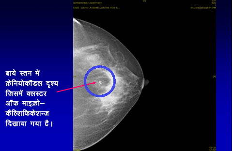
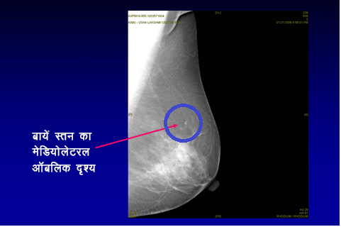

स्तन

स्तन
वक्षाग्र

मार्टिना नवरातिलोवा जो एक महान खिलाड़ी हैं और नौ बार विम्बलडन एकल चैंपियन रह चुकी हैं उनमें डक्टल कार्सिनोमा इन सिटू (डीसीआईएस) जो स्तन कैंसर का एक प्रारंभिक प्रारूप है का निदान किया गया था। 2010 में उनकी आयु 53 वर्ष थी और उन्होंने पिछले चार वर्ष से अपनी वार्षिक स्क्रीनिंग मैमोग्राम नहीं कराया था। हालांकि, इस बात की अनुशंसा की जाती है कि 40 वर्ष की आयु से प्रत्येक वर्ष स्क्रीनिंग मैमोग्राम कराने की सलाह दी जाती है। जब वार्षिक चेकअप कराने की बात आई तो उन्होंने माना कि उनकी स्वस्थ्य जीवनशैली और स्थिति ने उन्हें कुछ लापरवाह बनाया इसलिए उन्होंने वार्षिक जाँच नहीं कराई।
उन्होंने 2010 में दिए गए साक्षात्कार में बताया कि मैंने चार साल तक मैमोग्राम नहीं कराया। सभी लोग व्यस्त होते हैं लेकिन बहाना नही बनाइये। मैंने अपने स्वास्थ्य पर ध्यान रखा और स्वास्थ्यवर्धक भोजन का सेवन किया फिर भी मेरे साथ यह हुआ। अगर समय पर निदान न लगता तो मैं एक बहुत बड़ी समस्या में पड़ सकती थी। भाग्यवश कैंसर की पहचान प्रारंभिक चरण में की गई। उन्होंने वाइड लोकल एक्सीसन (लम्पएक्टोमी) कराया और मई 2010 में रेडिएशन थेरेपी पूर्ण की।
शेरिल क्रो, जो एक प्रसिद्ध गायिका हैं और नौ बार ग्रैमी पुरस्कार विजेता रही हैं और क्रिस्टीन एपलगेट, जो एक प्रसिद्ध हॉलीवुड अभिनेता हैं उनमें स्क्रीनिंग मैमोग्राम की वजह से प्रारंभिक चरण में अस्पृश्य स्तन कैंसर का निदान किया गया था।
डीसीआईएस क्या है
स्तन पिण्डिका, वाहिनीयों और वसा युक्त ऊतकों से बना होता है। डक्टल कार्सिनोमा इन सिटु (डीसीआईएस) स्तन कैंसर का प्रारंभिक रूप होता है जिसमें कैंसर के ऊतक पिण्डिकाओं (जो वक्षाग्र तक दूध को लेकर जाती हैं) के अंदर होते हैं। यह कैंसर पूर्व स्थिति होती है जिसमें कैंसर के ऊतक दूध की पिण्डिकाओं के परे स्तन के आस-पास के सामान्य ऊतक तक नहीं फैलते हैं।
डीसीआईएस कितना आम है?
अमेरिकन कैंसर सोसायटी के अनुसार, अमेरिका में प्रत्येक वर्ष डीसीआईएस के 60,000 मामले सामने आते हैं (प्रत्येक वर्ष स्तन कैंसर के 5 नए मामलों में से एक यह भी होता है)। भारत में, भारतीय चिकित्सा अनुसंधान परिषद (आईसीएमआर) के अनुसार प्रत्येक वर्ष स्तन कैंसर के 150,000 नए मामले सामने आते हैं। हालांकि, डीसीआईएस के मामलों पर कोई सटीक आँकड़े नहीं हैं। जागरूकता की कमी और संगठित स्क्रीनिंग प्रोग्राम की अनुपस्थिति के कारण, हमारे देश में 60% से अधिक स्तन कैंसर उन्नत चरण में होते हैं। भारत में प्रत्येक दस मिनट में स्तन कैंसर से एक महीला की मृत्यु होती है।
डीसीआईएस कैसे उपस्थित होता है?
आमतौर पर डीसीआईएस के कोई लक्षण प्रकट नहीं होते हैं। डीसीआईएस के अधिकांश प्रकार (80% से अधिक) की पहचान स्क्रीनिंग मैमोग्राफी में की जाती है। वक्षाग्र से स्रावित हुए रक्त में, वक्षाग्र के चारों ओर स्थित दाग (पृष्ठ का संदर्भ लें) स्तन में गांठ में डीसीआईएस उपस्थित हो सकता है।
डीसीआईएस का निदान कैसे किया जाता है?
स्तन स्क्रीनिंग की नियमित जाँच कराने पर डीसीआईएस की पहचान की जाती है। जाँच में विशेषज्ञ द्वारा किए जाने वाला क्लिनिकल स्तन परीक्षण, स्तन इमेजिंग (दोनों स्तनों का मैमोग्राम और स्तन का अल्ट्रासाउंड) और नीडल कोर बायोप्सी (त्री मूल्यांकन) शामिल होता है।

चूंकि डीसीआईएस स्तन में बहुत कम ही उपस्थित होता है, इसलिए स्तन का क्लिनिकल परीक्षण आमतौर पर सहायक नहीं होता है। मैमोग्राम जो स्तन की स्क्रीनिंग के लिए स्वर्णिम मानक है, वह आमतौर पर असामान्य दिखने वाले (प्लीओफोर्मिक) मैक्रोकैल्सिफिकेशन दिखाता है जो कैल्शियम के छोटे कण होते हैं और मैमोग्राम में सफेद बिंदु के रूप में प्रदर्शित होते हैं। यह ध्यान रखना चाहिए कि हालांकि सभी मैक्रोकैल्सिफिकेशन कैंसर युक्त नहीं होते हैं। डीसीआईएस की पहचान करने में बहु-विषयक टीम को कौशल और तत्परता के आवश्यकता होती है।



अंत में, निदान करने के लिए कोर निडल बायोप्सी द्वारा ऊतक का एक टुकड़ा निकाला जाता है जिसे लोकल एनेसथिसिया देकर स्टीरियोटेक्टिक मार्गदर्शन में किया जाता है (मैमोग्राम की सहायता से)। दूसरे प्रकार की नीदल बायोप्सी, फाइन नीडल एस्पिरेशन बायोप्सी (एफएनएसी) जिसे आमतौर पर स्तन में सुस्पष्ट दिखने वाली गांठ के लिए किया जाता है वह भ्रामक होती हैं और वे आक्रामक कैंसर (कैंसर जो स्तन के ऊतक में फैल गया है) और डीसीआईएस के बीच अंतर नहीं बता पाती है।

कुछ मामलों में, जब माइक्रोकैल्सिफिकेशन के गुच्छे बहुत सूक्ष्म होते हैं और उनका नीडल कोर बायोप्सी द्वारा निदान नहीं किया जा सकता है तब निदान करने के लिए सामान्य एनिसथिसया देकर फाइन गाईड वायर का उपयोग कर माइक्रोकैल्सिफिकेशन का पता लगाने के लिए एक्सीसन बायोप्सी आवश्यक हो सकती है।
डीसीआईएस को किस प्रकार से वर्गीकृत किया जाता है और इसका क्या महत्व है?
डीसीआईएस का वर्गीकरण माइक्रोस्कोप में ऊतकों के प्रदर्शन और यह ऊतक कितनी जल्दी विभाजित होते हैं के आधार पर किया जाता है। इसे उच्च, मध्यम वर्ग और निम्न-वर्ग डीसीआईएस के रूप में वर्गीकृत किया जा सकता है। यदि डीसीआईएस का उपचार न कराया जाए, तो कैंसर के ऊतक स्तन की पिण्डिकाओं से आसपास के क्षेत्र में फैल सकते हैं। इसे इन्वेसिव स्तन कैंसर कहा जाता है। उच्च-वर्ग डीसीआईएस की तुलना में निम्न वर्ग डीसीआईएस के इन्वेसिव स्तन कैंसर में परिवर्तित होने की कम संभावना होती है।
डीसीआएएस का उपचार कैसे किया जाता है?
उपचार का उद्देश्य स्तन के भीतर से सभी डीसीआईएस को निकालना होता है ताकि इन्वेसिव स्तन कैंसर की रोकथाम की जा सके। पिण्डिकाओं में डीसीआईएस की मात्रा और डीसीआईएस के वर्ग जैसे कारकों पर उपचार निर्भर करता है।
क. सर्जरी स्तन संरक्षण सर्जरीडीसीआईएस का प्रथम उपचार स्तन सर्जरी है। यदि डीसीआईएस का स्थान निर्धारित है और यह स्तन के किसी एक हिस्से में सीमित है, तो स्तन संरक्षण सर्जरी की जा सकती है। चूंकि न तो मरीज द्वारा और न ही चिकित्सक द्वारा कैंसर महसूस किया जा सकता है, लोकल एनिसथिसया देकर स्तन में एक फाइन गाईड वायर डाला जाता है ताकि स्तन के असामान्य हिस्से का पता लगाया जा सके। यह एक गाईड के रूप में कार्य करता है और इसके बाद सर्जन डीसीआईएस के साथ उसके आसपास के सामान्य स्तन ऊतकों को निकालने में सक्षम होता है (गाईड वायर निर्देशित वाइड लोकल एक्सीसन)
स्तन संरक्षण सर्जरी
वाइड लोकल एक्सीसन


यदि डीसीआईएस ने स्तन के एक बड़ें हिस्से को प्रभावित किया है या स्तन संरक्षण सर्जरी का उपयोग कर डीसीआईएस के आसपास सामान्य ऊतक का स्पष्ट क्षेत्र प्राप्त करना संभव नहीं हुआ है या स्तन में डीसीआईएस के एक से अधिक क्षेत्र हैं (मल्टीफोकल डीसीआईएस), तो विकल्प के रूप में मैस्टेक्टॉमी एक सर्जिकल उपचार है। यदि मैस्टेक्टॉमी की सलाह दी जाती है, तो मरीज को प्राथमिक सर्जरी के साथ-साथ स्तन पुनर्निर्माण कराने का विकल्प दिया जाना चाहिए ताकि मरीज की शारीरिक और मनोवैयानिक पीड़ा को कम किया जा सके जो स्तन के निकाले जाने से संबंधित होती है। आमतौर पर, कांख से लसीका ग्रंथियों को निकाले जाने की आवश्यकात नहीं होती है क्योंकि डीसीआईएस स्तन के ऊतक से पिण्डिकाओं में नहीं फैलता है।
स्तन निकालना
मैस्टेक्टॉमी

सौजन्यः स्तन कैंसर केयर, ब्रिटेन


सर्जरी के बाद आगे और उपचार किए जाने की आवश्यकता होती है। इसे सहायक थेरेपी कहा जाता है और इसमें रेडियोथेरेपी और हार्मोन थेरेपी शामिल होती है
रेडियोथेरेपीयदि स्तन संरक्षण सर्जरी की गई है, तो ऑपरेशन किए गए स्तन पर छह सप्ताह तक बाहरी बीम रेडियोथेरेपी की जाएगी जो मानक रूप से किए जाने वाला सहायक उपचार होगा। यदि मरीज ने मैस्टेक्टॉमी कराई है, तो रेडियो थेरेपी की आवश्यकता नहीं होती है।
हार्मोन थेरेपीयदि डीसीआईएस विकसित होने के लिए हार्मोन पर निर्भर करता है (ओस्ट्रोजेन रिसेप्टर पॉजिटिव), तो टेमॉक्सीफेन के रूप में हार्मोन थेरेपी का प्रस्ताव दिया जा सकता है।
कीमोथेरेपीडीसीआईएस के उपचार के लिए कीमोथेरेपी की आवश्यकता नहीं होती है।
क्या डीसीआईएस जीवन के लिए खतरनाक है और डीसीआईएस के रोग निदान क्या हैं?
नहीं, चूंकि कैंसर दूध की वाहिकाओं के परे स्तन के सामान्य ऊतकों के चारों ओर किसी भी स्थान तक नहीं फैला है इसलिए डीसीआईएस खतरनाक नहीं है। डीसीआईएस से पीड़ित महिलाओं में दीर्घ अवधि उत्तरजीविता दर उत्कृष्ट, जो 100% (98% - 99%) के करीब है।